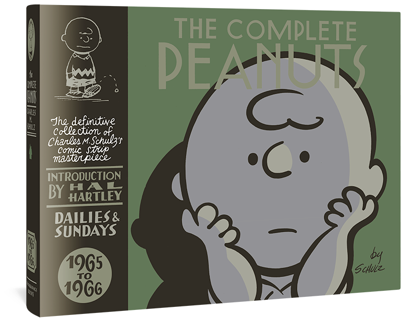

27:10 · 3 OPERE
A me gli occhi, please...
Il filo del discorso
Il relatore propone un esercizio di confronto fra grafici di mortalità attribuiti a Italia e Svezia per contestare la narrazione delle misure pandemiche nel 2020. Legge la differenza fra le curve come smentita delle restrizioni e avanza l’ipotesi che la circolazione del virus rafforzi l’immunità collettiva: la scheda conserva queste affermazioni come sue tesi, chiarendo che il confronto presentato non dimostra il nesso causale invocato.
Leggi la sintesi completaRiduci la sintesi
Il discorso passa poi all’obbedienza alla legge e alla responsabilità morale, con il ricordo della resistenza al nazismo e della posizione di Trasimaco. L’aneddoto sulla nomina di Gödel a professore serve a distinguere autorevolezza culturale e titoli; è ricordato anche The Empty Campus. Una fotografia descritta di birre rimaste su uno scaffale e frasi attribuite a Russell Madden e Mandela accompagnano la critica dell’ignoranza arrogante. La parte finale esprime dubbi sulla rapidità di sviluppo dei vaccini e sull’obbligo sanitario, senza fornire una valutazione clinica completa. Una striscia dei Peanuts chiude il percorso contrapponendo la luce della conoscenza alla semplice lamentela sull’oscurità.
I libri nel discorso

La Repubblica
Identificazione probabile
Note sul riferimento
Copertina: Laterza · La Repubblica · edizione con testo a fronte di riferimento
Immagine associata all’ISBN di riferimento e controllata visivamente; edizione e traduzione non identificate come quelle citate o lette nel video.
Trasimaco e il tema della giustizia come vantaggio dei forti: probabile riferimento alla Repubblica I, titolo non pronunciato.

The Empty Campus
Note sul riferimento
Copertina: Lulu · edizione inglese di riferimento
Immagine associata all’ISBN di riferimento e controllata visivamente; edizione e traduzione non identificate come quelle citate o lette nel video.
The Empty Campus nominato come proprio testo che discute l’episodio della nomina di Gödel.

Peanuts: la candela e l’oscurità
Note sul riferimento
Copertina della raccolta 1965–1966: The Complete Peanuts 1965–1966, vol. 8, Fantagraphics, 2007, ISBN 9781560977247.
Fotografia editoriale autentica della raccolta The Complete Peanuts 1965–1966, vol. 8, copertina rigida, Fantagraphics 2007, introduzione di Hal Hartley. Non è l’immagine della striscia isolata e non prova l’esemplare italiano usato nel video. La raccolta comprende le strisce di quel biennio; la data del 9 settembre 1965 resta da confermare.
Linus, Charlie Brown e la massima della candela: striscia riconoscibile dei Peanuts; data candidata 9/9/1965 non pronunciata.